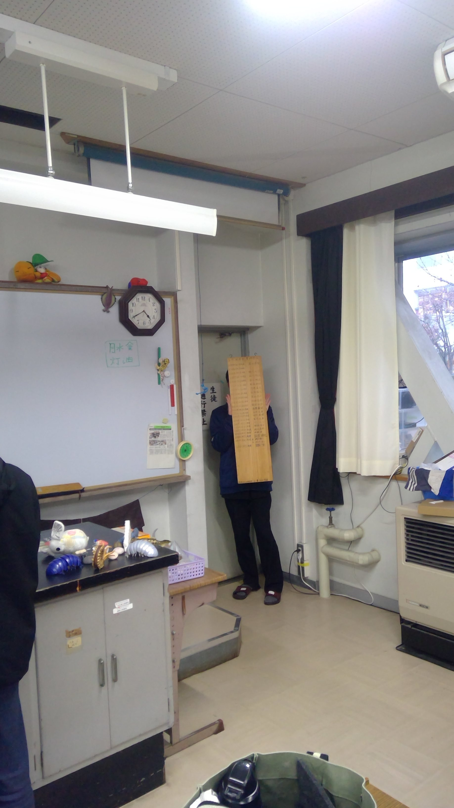
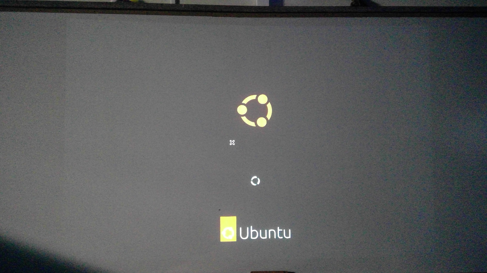
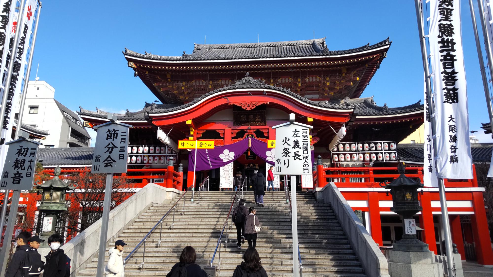
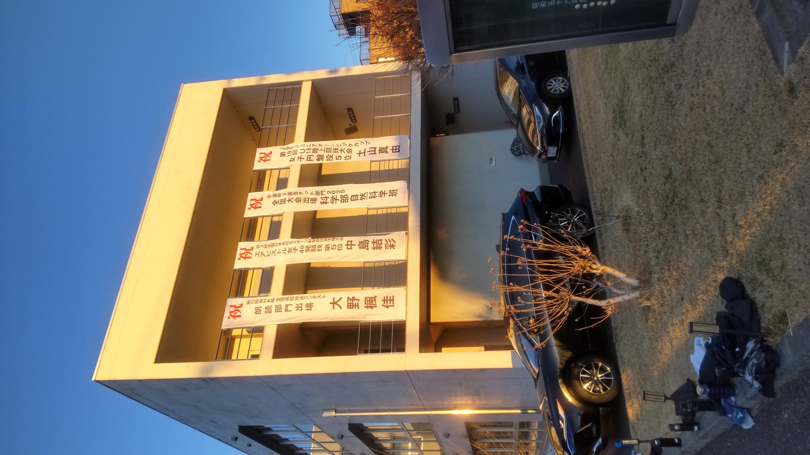
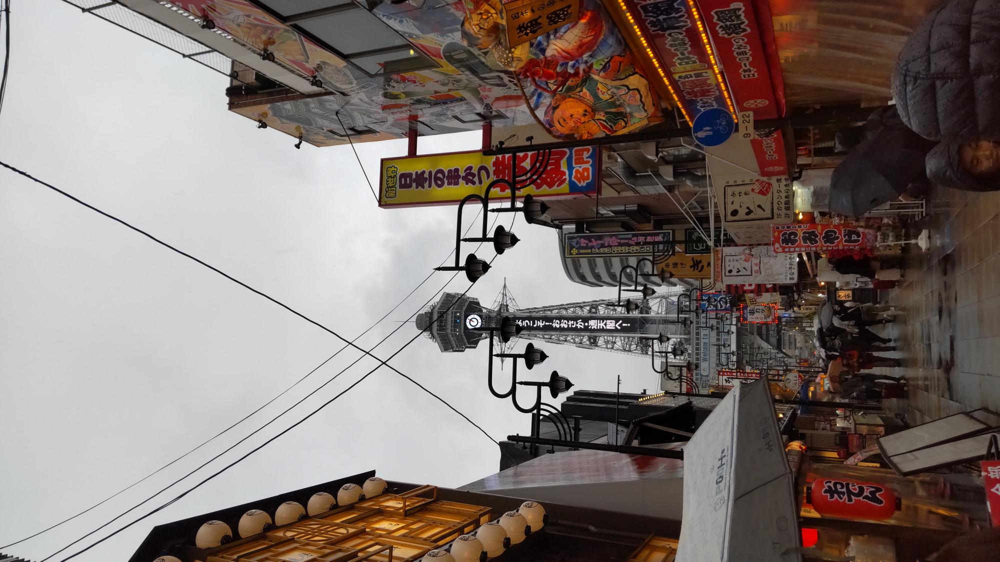
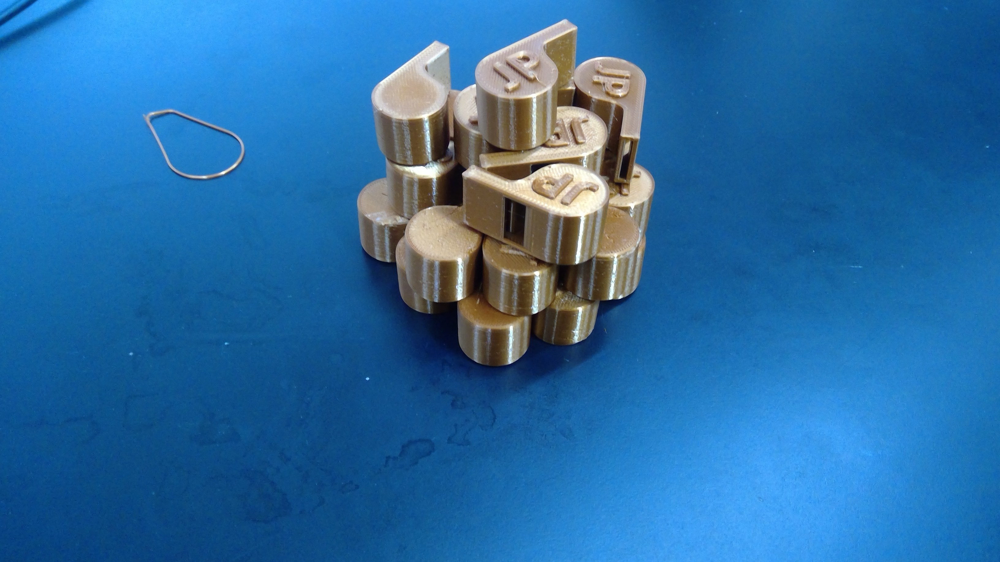
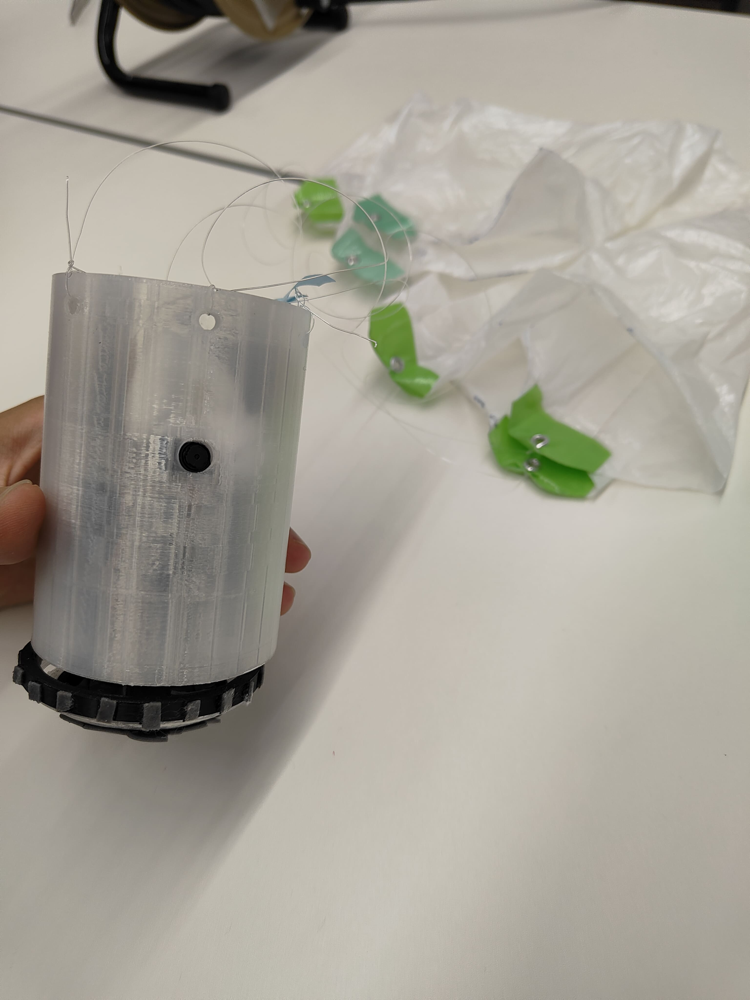
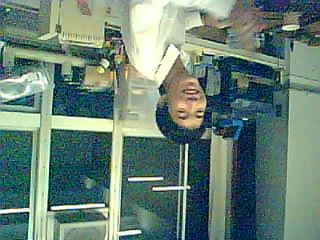

ビンゴまであと一人...!
2026年1月29日
今日はMEDARの方々と2004年度の自然科学部の部長さんが来られました。
そして、自然科学部の看板の裏の歴代部長がまた一人埋まりました。
あと全員埋まるまであと一人です！
2005年度の部長さん見ていましたら是非書きに来てください！！！

PC引き戻し
2026年1月27日
今日はMEDARが運営するtechSTANDに行ける最後の日だったので、
置いてきていたデスクトップPCを持ってきました。
ただしOSがubontuという...windows11をインストールします...

大雪
2026年1月21日
今日は大雪が降ると予報が出ていますが、
部員はそんなことも気にせず部活を続行しています。
なんでなのでしょうか？
寄付も受付中です！！！！！！！！！
大須へパーツ探し
2026年1月10日
今日は部活メンバーほぼ全員で大須へばねやドローンを買いに行きました。
その道中で大須観音へお参りをしたり、インド料理を食べたりしました。
ちなみに筆者はおみくじを引き、大吉でした。とてもうれしいです！

明けましておめでとうございます
2026年1月6日
皆様明けましておめでとうございます。今年もよろしくお願いします。
今日からまた部活が始まりました。
岐阜北高校生命館の外壁に缶サット班の全国出場の幕が掲げられました。
全国大会まであと３ヵ月。部活総員で頑張っていきますので、応援・寄付をよろしくお願いします！

メリークリスマス！
2025年12月25日
皆様メリークリスマス！！
私たちはこんな日でもいつも通り部活を行っています。（泣）
ですが今日でそんな部活も今年は終わりとなります。
来年も自然科学部缶サット班をよろしくお願いします。
ちなみに筆者はこの日大阪観光に行っていました。（なんでや...）

3dプリンターの導入
これまで故障してつかえなかった３dプリンターを新調して使えるようになりました。金欠です！！！！
話し合いをしました
2025年12月17日
今日は久々に各担当が集まり、全国大会に関する話し合いを行いました。
白熱した議論となり、長時間話し合いました。
全国大会に向けて方針を改めて固めることができたので、これからも頑張ります。
寄付も受付中です！！！！！！！！！

大会に出場しました
2025年10月4日
岐阜地方大会に出場し、日頃の成果を発揮しました。
前日4日間にかなりの残業をしたおかげで優勝することができました。
これから全国大会に向けてもう一度計画を練り直してしっかり準備を行い残業をしないように心がけたいです。
これからも応援よろしくお願いします。
寄付も受付中です！！！！！！！！！

10月3日の練習風景
2025年10月3日
この日は次の日に向けて急いで作業中です。帰宅時間は朝6時（翌日）でした。大会は8時からです。
次はこうならないように計画を立てて実行して行くことを目標にします。(泣)
